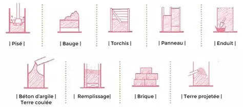
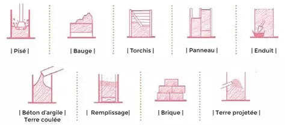
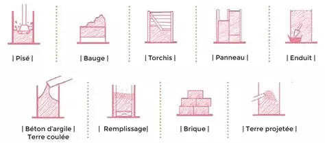
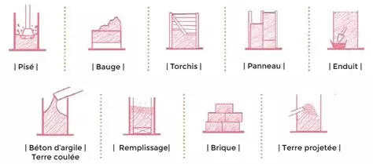
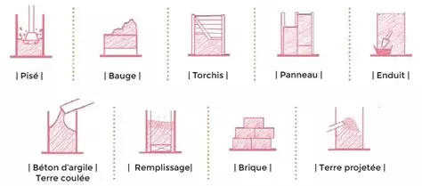

Processus de Fabrication des Briques en Terre Crue
Home
Processus de fabrication
Les avantages et inconvénients
1. Préparation des matériaux
Terre :
Une bonne terre doit contenir environ 20-30% d'argile. Un équilibre entre argile, limon, et sable est essentiel.
Eau :
Utilisée pour mélanger la terre et obtenir une pâte malléable.
Fibres (optionnel) :
Paille, foin ou feuilles peuvent être ajoutés pour renforcer la structure et limiter les fissures.
2. Préparation de la pâte
Mélanger la terre et l'eau jusqu'à obtenir une consistance pâteuse.
Si des fibres sont ajoutées, les couper en petits morceaux et bien les incorporer.
Laisser reposer la pâte quelques heures pour une meilleure absorption de l'eau.
3. Moulage des briques
Moules :
Utiliser des moules en bois ou en métal pour donner forme aux briques.
Remplissage :
Remplir les moules avec la pâte et bien tasser pour éliminer les poches d'air.
Nivellement :
Lisser la surface pour obtenir des briques régulières.
4. Séchage des briques
Laisser les briques sécher à l'air libre dans un endroit ombragé et bien ventilé.
Retourner les briques régulièrement pour un séchage uniforme.
Le séchage peut durer de 7 à 14 jours selon l'humidité et la température.
5. Curation et stockage
Après le séchage, stocker les briques dans un endroit sec et ventilé.
Pour la construction, utiliser un mortier à base de terre, de chaux ou de sable.
6. Utilisation et entretien
Utiliser les briques pour construire des murs, maisons, ou cloisons.
Elles offrent une bonne isolation thermique et acoustique.
Protéger les briques de l'humidité excessive avec un enduit à base d'argile ou de chaux.
Résultat final
Le résultat d'une brique en terre crue à la fin du processus :

 


